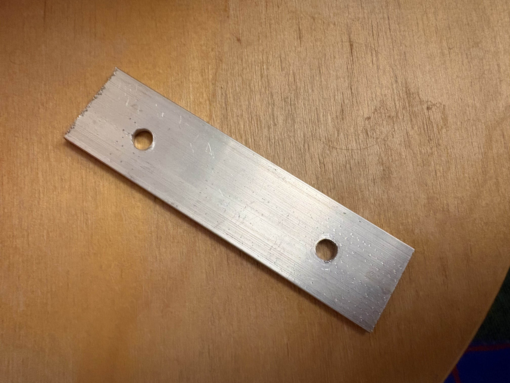
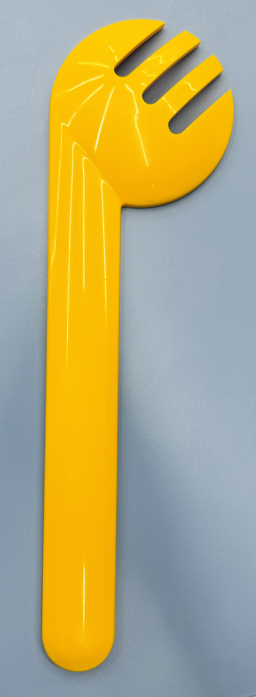
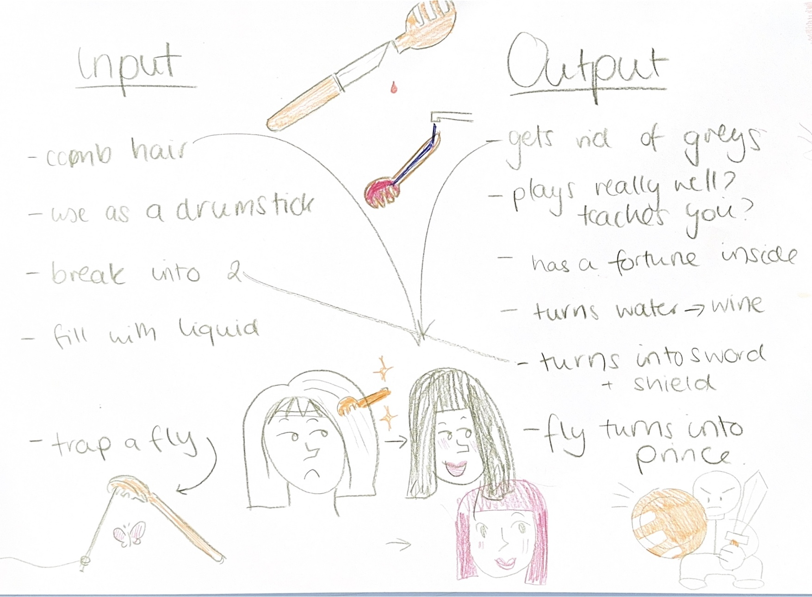
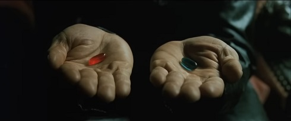
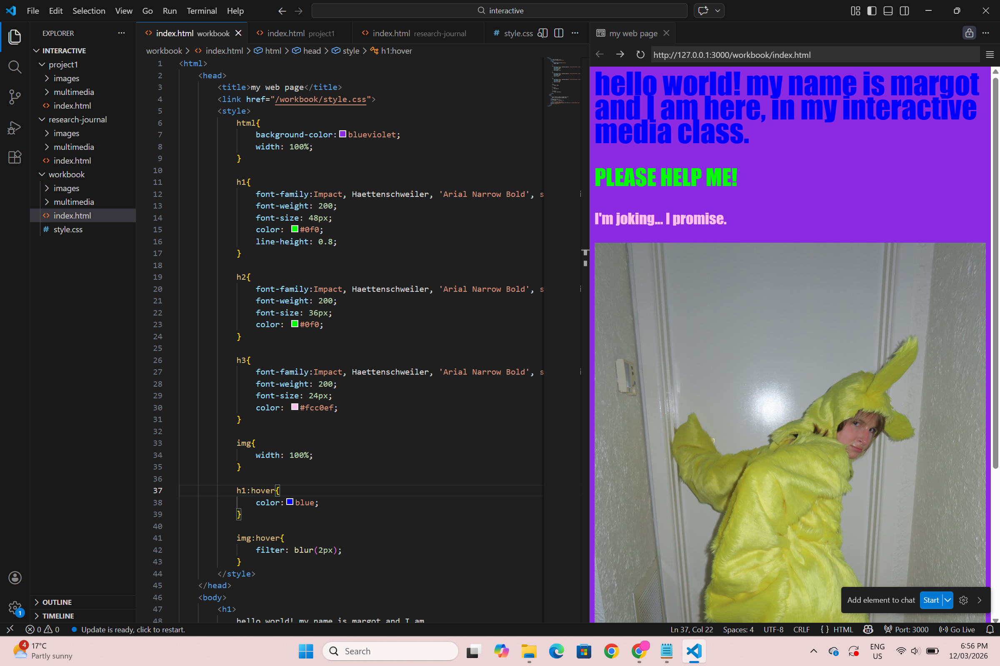
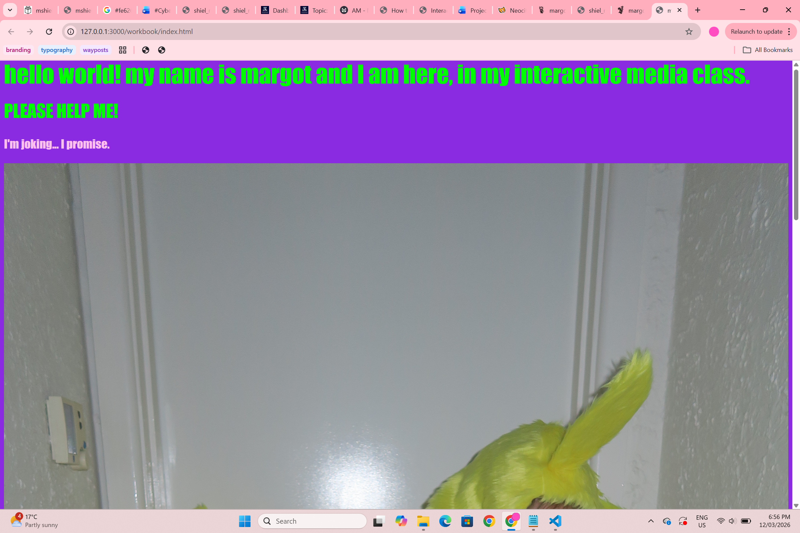
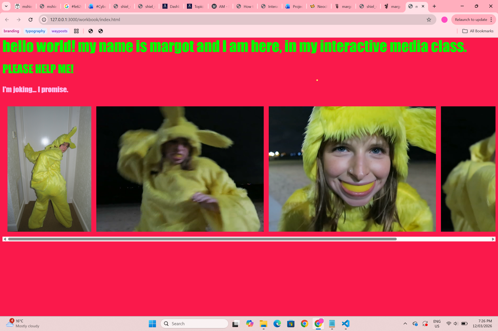
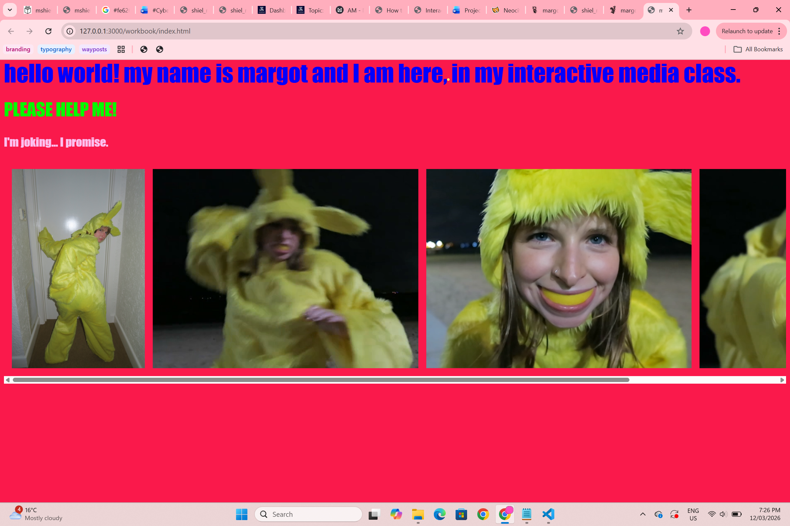
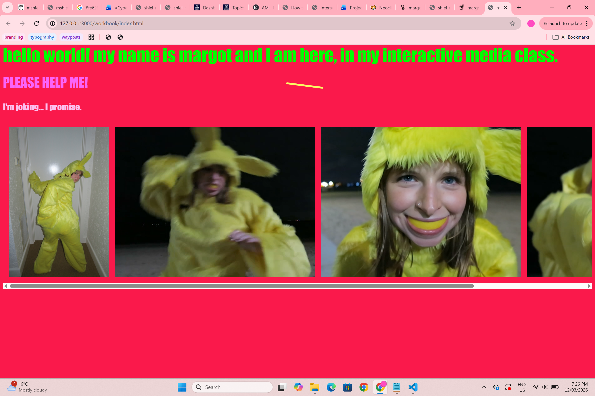

Coming into the subject I was excited to further explore the skills that I had developed in #Cyberstar and Word as Image in Space and Time. My general sense (and hope) was that this class would be pretty challenging and exciting, and that I would be sure to learn A LOT. This was confirmed by our classes introduction to the word/mantra/guiding prinicple of 'Ambiguitastoleranz'. We will be tolerant of unknowning! I will be comfortable being uncomfortable! This feels like a very exciting start to the semester.
My introduction to the Interactive Media subject was the induction for the Teslstra Creator Space. This space is largely used by engineering students as a fabrication lab, with supervised access to hand tools, drills and wood working and metal working spaces, as well as 3D printing and sewing machines. This was fun - a little scary using the tools, but I can definitely see the potential for lots of exciting projects/even using the sewing machine etc. I did really enjoy the feeling of using the drills.

Another activity that we completed - in groups - was to reimagine or invent the interactivity of a certain, common-place item. My group (Krystina and Shuwen) had a kind of art deco style, bright yellow, plastic, salad spoon. We imagined that it could be used as a comb that instantly touches up your roots, a hidden knife/sword/shield, or a vessel that turns water into wine. Other groups reimagined how we engage with a mirrored silver ball, a coat hanger, a cardboard box, wooden block, or a plastic bug. This excerise challenged the heuristics of interactivity and inferface design - there are inputs other that pushing a button that we can use!


Written and directed by Lana and Lily Wachowski, The Matrix
was a huge cutural phenomenon in 1999. IMDB log line is as follows:
'When a beautiful stranger leads computer hacker Neo to a forbidding
underworld, he discovers the shocking truth - the life he knows is the
elaborate deception of an evil cyber-intelligence.' The cultural impact
of this movie cannot be overstated; the language of blue and red pills
(which has been co-opted by incels, conspiracy theorists and the
manosphere), the long leather dusters and dark sunglasses and even
the concept of needing to 'wake up' to reality, can all be traced
directly back to Neo's Messiah story.
When it comes to interactivity, it was equally innovative
and arresting. This movie makes the digital interface physical.
The idea that you could 'upload' skills to your body or 'enter'
the interface with your physicality is so thrilling. It makes me
think of the ways that we try to achieve this in the real world -
VR and vibrating game controllers, and suits that mimic the feeling
of a particular environment.
I remember when I was a child and was desperate to go to a 4D
movie experience, and then disappointed when it was just a bit
of movement in the cinema seat, and a spray of water to invoke
the fog on the screen. The difference, I think for me, is that
culturally, the virtual reality experiences that exist today,
feel very corporate and uncool. I wonder if this is just my own
bias. The Matrix, of course, feels much cooler.

In preparation for class I prepared a file tree to structure
my workbook website. At this point, I thought would have a
home page, and then individual pages for my case studies, class
activities, glossary and experiments/play. In class we set up
the basic html structure for our pages, and I followed along,
adding some hover effects such as changes in colour and a
filter:blur().
I then went home and added extra photos, hovers
and a scroll flexbox to this page. I was really just playing
around quite freely and randomly; using images from past work,
the Impact typeface that is preloaded, and the brightest colours
I could think of, to bounce off one another. Additionally, I
played around in java script (p5js) to create a cursor effect
(yellow line following cursor) just to refresh my memory of this
kind of coding. I honestly quite like the weird and free page
I created!




